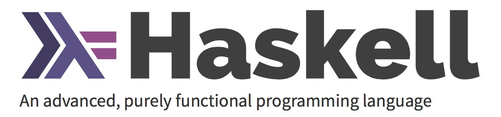

Haskell 函数式编程
Haskell 与 Java、C++不同，它是纯函数式的编程语言，说到函数式编程，函数式与面向对象编程究竟有哪些不同？在这里将会介绍一下函数式编程的特点和起源。

编程范式：
在介绍 Haskell 之前，说一说编程范式，编程范式可简单划为两类：
- 命令式编程 (Imperative programming)
- 声明式编程(Declarative programming)
- 命令式编程 （Imperative programming）
将程序写成一条条指令，计算机依次执行得到最终结果，这种编写程序的方式叫做 命令式编程。 通常包含三种基本语句：- 运算语句
- 循环语句
- 流程控制语句
结构化命令式 -> 面向对象编程（Object-oriented programming，OOP） 一种软件设计思想，OOP达到了软件工程的三个主要目标：重用性、灵活性和扩展性。OOP=对象+类+继承+多态+消息，其中核心概念是类和对象。
- 声明式编程（Declarative programming）
声明式编程的发源 声明式编程发轫于人工智能的研究，主要包括函数式编程（functional programming，简称FP）和逻辑式编程（logic programming，简称LP）。 其中，函数式编程将计算描述为数学函数的求值，而逻辑式编程通过提供一系列事实和规则来推导或论证结论。 声明式编程是人脑思维方式的抽象，即利用数理逻辑或既定规范对已知条件进行推理或运算。声明式描述目标的性质，让计算机明白目标，而非流程。
声明式与命令式编程理念和风格
- 命令式编程是行动导向（Action-Oriented）的，因而算法是显性而目标是隐性的；
- 声明式编程是目标驱动（Goal-Driven）的，因而目标是显性而算法是隐性的。
常见的命令式编程语言有：C、C++、Objecti-C、Java、PHP 等等，其中有些也可以支持 声明式编程。 常见的声明式编程语言有：SQL、HTML、Haskell、Lisp、Prolog。
什么是 Haskell
Haskell 与其他语言不同，是一门纯粹函数式编程语言 (purely functional programming language)
在纯粹函数式编程语言中，不是像命令式语言那样命令电脑「要做什么」，而是通过用函数来描述出问题「是什么」， 如「阶乘是指从1到某个数的乘积」，「一个串列中数字的和」是指把第一个数字跟剩余数字的和相加。 用声明函数是什么的形式来写程序。另外，变量 (variable) 一旦被指定，就不可以更改了， 已经说了 a 就是 5，就不能再另说 a 是别的什么数。
Haskell 的特点
- Haskell 是惰性 (lazy) 的。也就是说若非特殊指明，函数在真正需要结果以前不会被求值.
- Haskell 是静态类型 (statically typed) 的。当你编译程序时，编译器需要明确哪个是数字，哪个是字符串。
纯度
函数带有副作用指的是，函数的行为受系统的全局状态所影响。
举个命令式语言的例子：假设有某个函数，它读取并返回某个全局变量，如果程序中的其他代码可以修改这个全局变量的话，
那么这个函数的返回值就取决于这个全局变量在某一时刻的值。我们说这个函数带有副作用，尽管它并不亲自修改全局变量。
副作用本质上是函数的一种不可见的（invisible）输入或输出。
Haskell 的函数在默认情况下都是无副作用的：函数的结果只取决于显式传入的参数。
我们将带副作用的函数称为'不纯（impure）函数'，而将不带副作用的函数称为'纯（pure）函数'。
安装运行 Haskell 脚本：
- 到 ‘www.haskell.org’ 官网按照提示安装编译器 GHC，
- GHC 可以解释运行 HasKell 脚本，也可以编译。它还提供一个’交互模式’ 加载 Haskell 脚本，然后调用脚本里的函数
- 新建脚本文件，以’.hs’结尾， 打开控制台输入 ghci，进入交互模式。
- 运行 ‘:l xxx.hs’ 加载脚本，如果更新文件需 运行 ‘:r xxx.hs’
Haskell 函数式表达
Haskell 中的 List
List 是一种单类型的数据结构，可以用来存储多个类型相同的元素。List 中的 List 可以是不同长度，但必须得是相同的类型.
字符串是一组字符的 List，"Hello" 是 ['h','e','l','l','o'] 的语法糖。可以使用处理 List 的函数来对字符串进行操作。 将两个 List 合并，可以通过 ++ 运算符实现。
: 运算符可以连接一个元素到一个 List之中，而 ++ 运算符则是连接两个 List。若要使用 ++ 运算符连接单个元素到一个 List 之中，就用方括号把它括起使之成为单个元素的 List。[1,2,3] 实际上是 1:2:3:[] 的语法糖。[] 表示一个空 List,若要从前端插入 3，它就成了[3], 再插入 2，它就成了[2,3]，以此类推。
一些函数：
head 返回一个 List 的头部，也就是 List 的首个元素。
tail 返回一个 List 的尾部，也就是 List 除去头部之后的部分。
last 返回一个 List 的最后一个元素。
init 返回一个 List 除去最后一个元素的部分。
reverse 将一个 List 反转:
take 返回一个 List 的前几个元素
List Comprehension 列表推导式
前十个偶数的 set comprehension 可以表示为S = {2⋅𝓍 |𝓍 ∈ ℕ,𝓍 ≤ 10 }，竖线左端的部分是输出函数，x 是变量，N 是输入集合，从既有的集合中按照规则产生一个新集合。
在 Haskell 下，我们可以通过类似 take 10 [2,4..] 的代码来实现。但若是把简单的乘 2 改成更复杂的函数操作该怎么办呢？
用 list comprehension，它与 set comprehension 十分的相似，用它取前十个偶数轻而易举。这个 list comprehension 可以表示为：
ghci> [x*2 | x <- [1..10]]
[2,4,6,8,10,12,14,16,18,20]
Tuple 元组
- Tuple 中的项由括号括起，并由逗号隔开。
- 要求对需要组合的数据的数目非常的明确。
- 它的类型取决于其中项的数目与其各自的类型。
考虑一个同时应用到 List 和 Tuple 的问题：如何取得所有三边长度皆为整数且小于等于 10，周长为 24 的直角三角形？
- 把所有三遍长度小于等于 10 的三角形都列出来。 从三个 List 中取值，并且通过输出函数将其组合为一个三元组
let triangles = [ (a,b,c) | c <- [1..10], b <- [1..10], a <- [1..10] ]
注意： 三角形 3 条边的关系，a + b > c
- 添加一个限制条件，令其必须为直角三角形。同时也考虑上 b 边要短于斜边，a 边要短于 b 边情况：
let rightTriangles = [ (a,b,c) | c <- [1..10], b <- [1..c], a <- [1..b], a^2 + b^2 == c^2] - 修改函数，告诉它只要周长为 24 的三角形
let rightTriangles' = [ (a,b,c) | c <- [1..10], b <- [1..c], a <- [1..b], a^2 + b^2 == c^2, a+b+c == 24]调用 函数
rightTriangles
函数式编程语言的一般思路：先取一个初始的集合并将其变形，运行过滤条件，最终取得正确的结果
lambda
Monads
函数的合成与柯里化
如果一个值要经过多个函数，才能变成另外一个值，就可以把所有中间步骤合并成一个函数，这叫做”函数的合成”（compose）。
f(x)和g(x)合成为f(g(x))，有一个隐藏的前提，就是f和g都只能接受一个参数。如果可以接受多个参数，比如f(x, y)和g(a, b, c)，函数合成就非常麻烦。
这时就需要函数柯里化了。所谓”柯里化”，就是把一个多参数的函数，转化为单参数函数。
有了柯里化以后，我们就能做到，所有函数只接受一个参数。
参考资料
声明式编程范式初探
Haskell 趣学指南
Haskell官网
real world Haskell
函数式编程入门教程